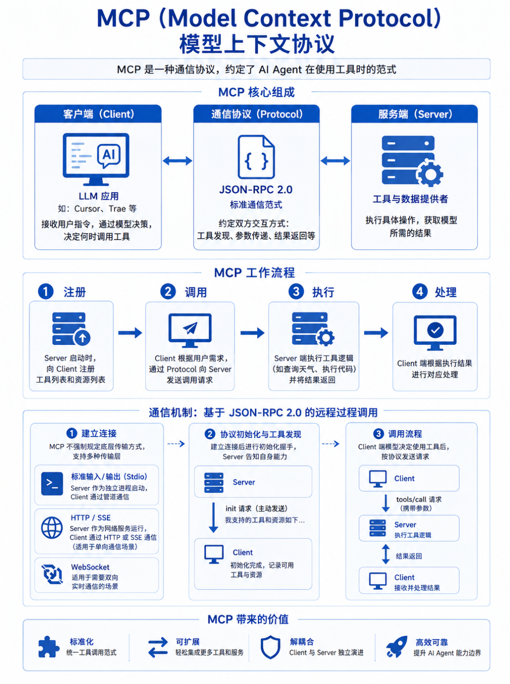

MCP，全称是Model Context Protocol，模型上下文协议。他是一种通信协议，约定了AI Agent在使用工具时候的范式。
MCP核心分为三个部分，分别是客户端（Client），服务端（Server）和通信协议（Protocol）
- 客户端：通常指的是LLM应用，比如Cursor，Trae等等，它负责接收用户输入的指令，并通过模型决策，最终决定什么时候调用工具。
- 服务端：提供具体工具和数据源的服务端，它负责执行具体的操作动作，以获取模型需要的结果
- 通信协议：连接Client和Server的标准通信范式（基于JSON-RPC 2.0协议），它约定了双方交互的通信方式，包含如何发现工具，传递参数，返回结果等。
工作流程如下：
- 注册：Server启动时候，向Client注册自己提供的工具列表和资源列表
- 调用：Client根据用户需求，通过Protocol向Server发送调用请求
- 执行：Server端执行工具逻辑（如查询天气，执行代码），并将结果通过Protocol返回给Client端
- 处理：Client端根据执行结果进行对应结果
客户端通过MCP协议将请求发送到Server，是通过一个标准化，基于JSON-RPC 2.0的远程过程调用机制来实现的，这个过程可以分解为几个关键步骤：
- 建立连接：Client和Server需要建立一个通信信道，MCP协议不强制规定底层的传输方式，支持多种传输层
- 标准输入/输出（Stdio）：Server作为一个独立的进程启动，Client通过管道与之通信
- HTTP/SSE：Server作为一个网络服务运行，Client通过HTTP请求或者SSE进行通信，适用于单向通信的场景
- WebSocket：适用于需要双向实时通信的场景
- 协议初始化和工具发现：在进行链路通信之后，Client和Server端会进行初始化握手，Server端会将自己的能力告知Client
- Server端主动发送一个init初始化请求，将自己支持哪些工具和资源告诉Client端
- 调用流程：当Client端模型决定使用什么工具之后，他会按照协议发送对应的请求
这里也写了一个demo，实现了一些Agent一些技术栈的设计：https://github.com/Peterliang233/agent-chatbox